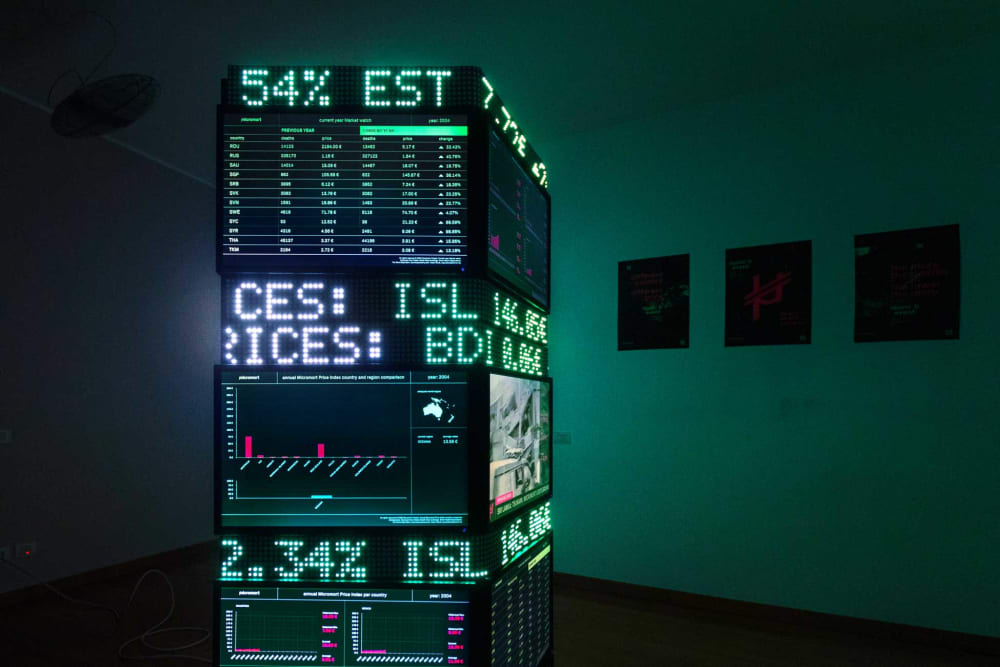
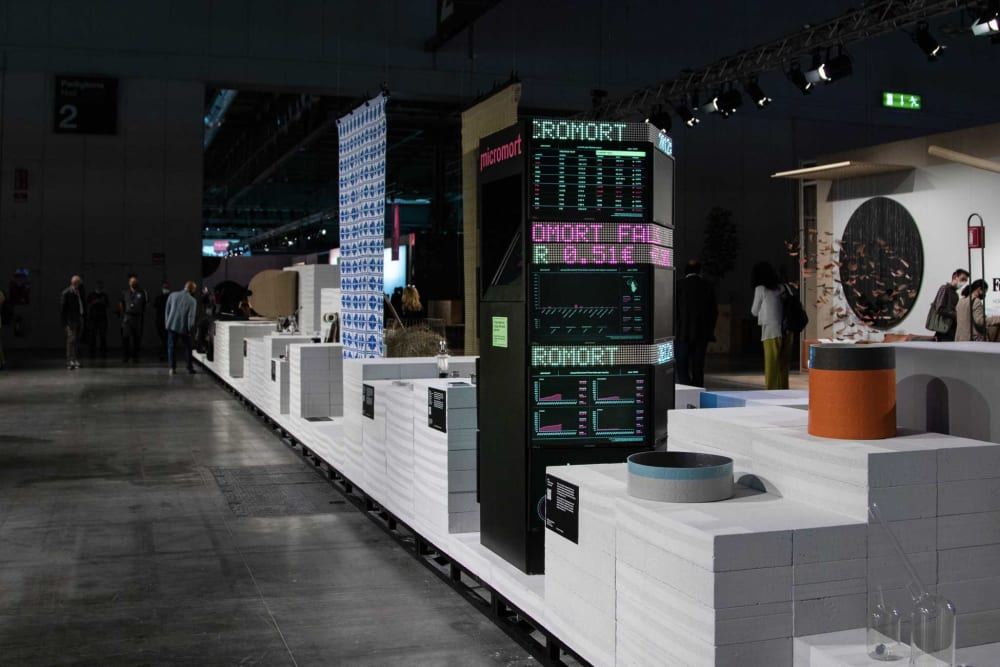

Micromort

"What if every death had a price?".
Death has a social value closely linked to the country in which it occurs. This leads western countries to place a higher value on their deaths than on those in developing countries. Micromort highlights this disparity, a new currency that
converts the social value into economic value, setting a price for each death depending on where it occurs.

To create an interaction that was memorable and that touched users deeply, a user-friendly interaction was designed and implemented. The idea was to create a data visualisation system that would allow each user to travel into the world of
Micromort, understanding its true speculative nature. Starting with The WebGL Globe created by the Experiments with Google team, I learned to program in
Three.js to make the product perfect for our purpose.
At The Lost Graduation Show in 2021, Micromort attracted more than 2000 people to interact with its interactive experience. The monitor has been touched more than 4500 times, and the data collected make us understand how the concept behind Micromort is strong and
increasingly actual.
Micromort website | Interactive Globe
Press and Awards
 